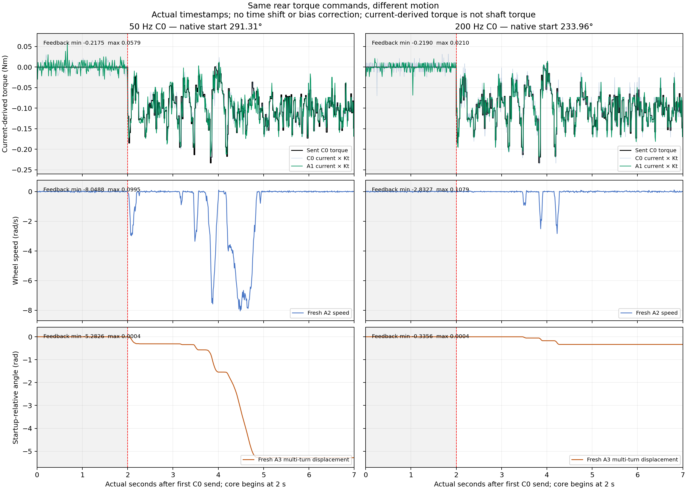
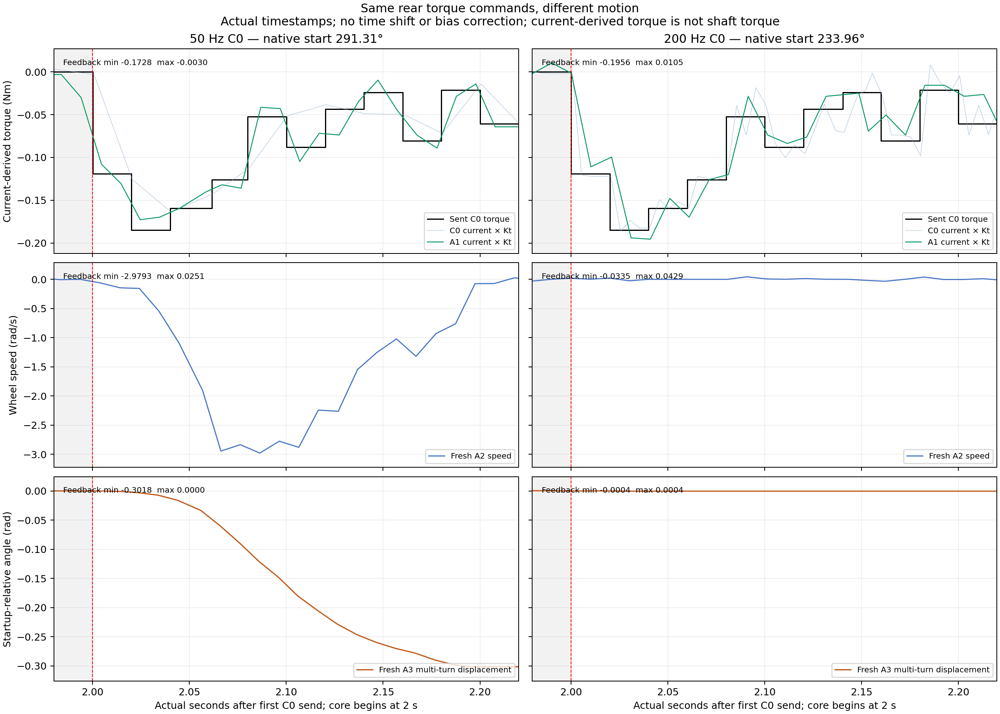

Report · Statistics · Summary CSV
Red line: beginning of recorded torque sequence. Both runs start at rest, but different physical angles. All signals retain actual timestamps; no new motor operation.

